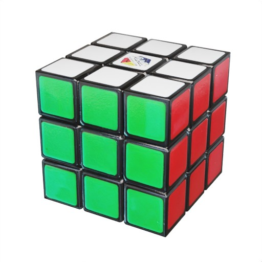
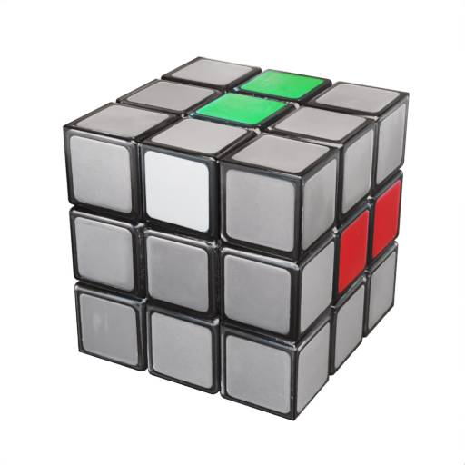

Lösen eines Zauberwürfels
Einen Zauberwüfel zu lösen, auch Rubiks Cube genannt, ist für 99% der Menschen unmöglich. Denn
ohne
die
richtige Strategie kommt man mit einfachem Ausprobieren nicht weit. Tatsächlich ist es gar nicht
schwer
und man muss dafür auch kein Nerd sein. Also: Los geht's!

Grundlagen
Einen Zauberwüfel zu lösen, auch Rubiks Cube genannt, ist für 99% der Menschen unmöglich. Denn ohne die richtige Strategie kommt man mit einfachem Ausprobieren nicht weit. Tatsächlich ist es gar nicht schwer und man muss dafür auch kein Nerd sein. Also: Los geht's!
Ein Zauberwürfel hat sechs Seiten und somit auch sechs verschiedene Farben. Ziel ist es, dass jede Seite nur aus einer Farbe besteht. Dazu können die jeweiligen Seiten gedreht werden. Es gibt insgesamt 43.252.003.274.489.856.000 möglich Kombinationen. Insgesamt gibt es sechs Schritte, um einen Zauberwüfel zu lösen.
In den folgenden Abbildungen sind immer die Seiten grau makiert, die für den jeweiligen Schritt nich benötigt werden, d.h. diese sind erstmal egal und können jede Farbe haben.
1. die oberste Ebene lösen
Die oberste Ebene ist die Seite, wo der weiße Würfel in der Mitte ist. Die mittleren Steine bleiben immer gleich, d.h. egal wie du an dem Würfel drehst: die mittleren Steine werden zueinander immer gleich angeordnet sein. Sie sind also Orientierungspunkte, an welche wir uns halten müssen. Deshalb fangen wir damit, an die zugehörigen Kanten zu der weißen Mitte zu finden. Ziel ist es, auf der obersten Ebene ein weißes Kreuz zu bilden.
Diesen Schritt solltest du intuitiv lösen. Probiere einfach etwas herum, mit der Zeit wirst du den Dreh herausfinden.
-
Zeigt die weiße Seite der Kante nach unten (bzw. ist sie auf der gegenüberliegenden Seite der weißen Mitte) dann brauchst du nur die unterste Ebene drehen, bis die zugehörige Farbe der weißen Kante mit dem Mittelstein der mittleren Ebene übereinstimmt. Dann drehst du die gerade genannte Ebene, bist der Stein an der richtigen Stelle ist.
 - Steht die weiße Seite der Kante senkrecht auf dem weißen Mittelstein, dann drehst du als erstes die Ebene der weißen Seite bis diese auf der unteren Ebene ist. Dann bewegst du die untere Ebene bis die Kante auf der gegenüberliegenden Seite der entsprechenden Mitte liegt. TODO
2. Zweite Ebene vervollständigen
Die zweite Ebene des Zauberwürfels zu lösen, erfordert etwas mehr Geduld und Planung. Ziel ist es, alle Steine auf dieser Ebene so anzuordnen, dass sie mit den Steinen auf der obersten Ebene übereinstimmen und die mittleren Steine der zweiten Ebene die gleiche Farbe haben.
Du kannst dies erreichen, indem du die Kantensteine an die richtige Stelle der zweiten Ebene bringst und die Eckensteine entsprechend anordnest. Dieser Schritt erfordert einige Algorithmen, die du erlernen kannst, um die Steine an die gewünschte Position zu bewegen.
3. Erste Ebene vervollständigen
Die dritte Phase besteht darin, die erste Ebene zu vervollständigen. Jetzt musst du die verbleibenden Ecken der ersten Ebene so anordnen, dass sie die gleiche Farbe aufweisen. Dies erfordert spezifische Algorithmen und Schritte, um die Eckensteine richtig zu platzieren.
Denke daran, dass die mittleren Steine der ersten Ebene immer an ihrem Platz bleiben, und du nur die Eckensteine positionieren musst, um die erste Ebene zu lösen.
4. Dritte Ebene vorbereiten
Nun richten wir unsere Aufmerksamkeit auf die dritte Ebene des Zauberwürfels. Ziel ist es, alle Eckensteine der dritten Ebene an die richtige Position zu bringen, während die Kantensteine noch nicht korrekt platziert sind. Dies ist ein wichtiger Schritt, um die Lösung zu vervollständigen.
Es gibt spezifische Algorithmen und Techniken, die dir dabei helfen, die Eckensteine in die richtige Position zu bringen, ohne die bereits gelösten Teile zu stören.
5. Dritte Ebene vervollständigen
Jetzt konzentrieren wir uns auf die Fertigstellung der dritten Ebene. In diesem Schritt musst du die verbleibenden Kantensteine der dritten Ebene an ihre korrekten Positionen bringen. Dies kann etwas komplexer sein, erfordert aber den Einsatz von bestimmten Algorithmen und Techniken.
Das Ziel ist es, alle Kantensteine so zu platzieren, dass alle Seiten des Zauberwürfels jeweils nur aus einer Farbe bestehen.
6. Feinabstimmung und Vollendung
In diesem letzten Schritt geht es darum, die Feinabstimmung vorzunehmen und sicherzustellen, dass alle Teile an ihren richtigen Positionen sind. Du wirst spezielle Algorithmen verwenden, um die letzten Kantensteine an die richtige Stelle zu bewegen und den Zauberwürfel zu vollenden.
Sobald du diesen Schritt abgeschlossen hast, sollte der Zauberwürfel vollständig gelöst sein, und du kannst die bewundernden Blicke deiner Freunde ernten!